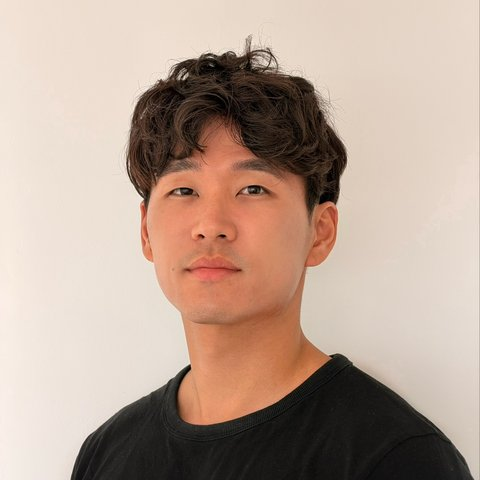
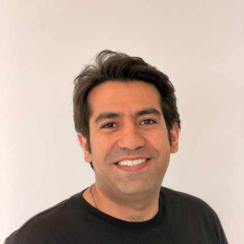
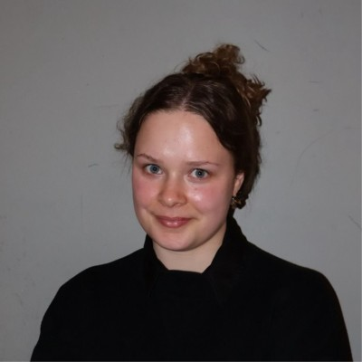
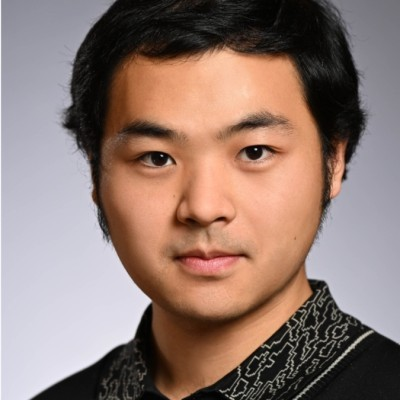
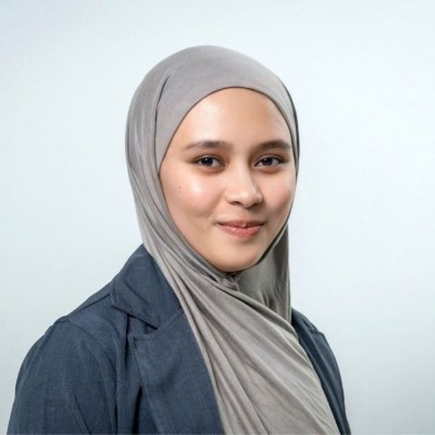
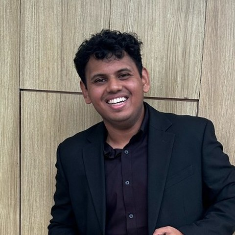
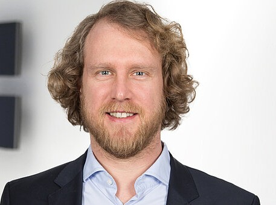
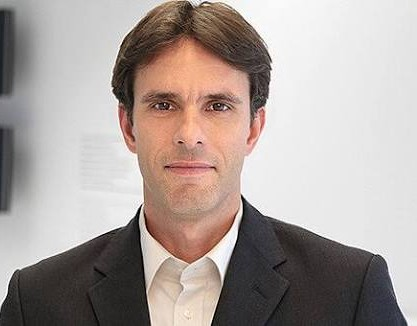
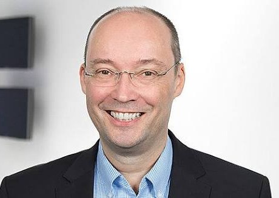

ORIGIN
LUXONNIC is a spin-off in the making from the Photonic Networks and Systems department at Fraunhofer Heinrich Hertz Institute, one of Europe's leading communications research institutes. The founding team is still rooted there, building the PNP on the institute's deep expertise in photonics and signal processing.

Co-Founder · CEO
Dr.-Ing., TU Berlin · M.Sc. and B.Sc., KIT and KAIST · Baden-Württemberg Scholar · University Lecturer since 2022 · Best Student Paper Award, OECC 2026
View Profile →
Co-Founder · CTO
Dual M.Sc., K. N. Toosi University & BHT Berlin · 9+ Years in Wireless Telecom · Fraunhofer HHI Researcher · Neuromorphic Computing & ML
View Profile →Co-Founder · CCO
Third founding team member · Details to be announced
View Profile →Lead Photonic Design Engineer
Joining the team · Details to be announced
View Profile →
Junior Marketing Specialist
Communications · Marketing · Business development
View Profile →
Working Student · Photonic Devices & Optical Communications Engineering
B.Sc. EE cand., TU Berlin · Silicon Photonics Thesis · Hackathon Champion (Nokia, TRMNL, Huawei)
View Profile →Visual Designer, Fraunhofer HHI
Brand & design systems · Matter and Meaning newsletter · M.A. Weißensee Academy of Art Berlin
View Profile →
Innovation & Entrepreneurship, ESMT Berlin
Go-to-market · Customer development · Venture building
View Profile →
Innovation & Entrepreneurship, ESMT Berlin
Strategy & business operations · Go-to-market · Venture consulting
View Profile →Innovation & Entrepreneurship, ESMT Berlin
Founder, LY · Go-to-market & sales · Tax and consulting background
View Profile →
Technical & Scientific Advisor
Dipl.-Ing. & Dr.-Ing., TU Berlin · Fraunhofer HHI Since 2010 · High-Speed Coherent Optical Systems · Real-Time DSP Implementation · OFC Technical Program Committee
View Profile →
Strategic Scientific Advisor
Dr. rer. nat., TU Berlin · Fraunhofer HHI Since 2000 · Head of Submarine & Core Systems Group · Deputy Department Head · German Physical Society Member
View Profile →
Strategic & Industry Advisor
Professor, TU Berlin · Dr.-Ing. & MBA (RWTH Aachen) · Head of Photonic Networks & Systems, Fraunhofer HHI · Co-Founder & former CTO, VPI Systems
View Profile →